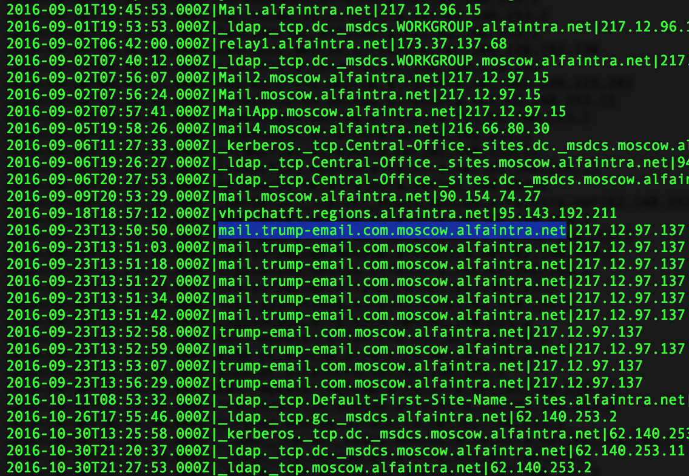

Intra Net DNS Leakage
An intranet
is a company's internal network, intra or inside the
boundaries of the company. Intranets are not
intended to be accessible or visible from the outside except
via special access. These private networks are
for business; these are not public accessible. Even regular checking
account holders of Alfa Bank don't get access. Such networks run off a
green list or white list of approved parties. DNS leakage does occur occasionally between
a company internal network and the Internet, especially during
times of errors and configuration because of human factors.
Here we see clear indication that the Moscow division of the INTERNAL
Alfa Bank network most definitely has purposeful communications
with a hostname registered by the Trump Organization. The
concatenation below is a DNS leak of an internal configuration.
If a machine were spamming a company, you would block it. You be would
be highly unlikely to change your internal intranet records to make
sure the connection continued.
Here we see a change to the
Trump-Email.com zone from DNS by CenDyn. (CenDyn has stated that
the host was indeed in use for "a bank" that wanted to have
"meetings" with Alfa Bank - read those details here).
SCROLL DOWN TO CONTINUE READING
TIMESTAMP | HOSTNAME | QUERY ORIGINATOR IP
The QUERY ORIGINATOR IP is typically a recursive DNS resolver

This query is unusual in that is merges two hostnames into
one. It makes the most sense as a human error in inserting a new hostname in some
dialog window, but neglected to hit the backspace to delete the
old hostname.
Of course, this runon hostname doesn't exist; it's just
two hostnames run together. Some 90 seconds later, the networks
stopped talking about this host (at 2016-09-23T13:56:29.000Z), and
further queries were not seen. But the brief minute life of the
query associates the trump-email server to a new zone: the Alfa
Bank intranet network.
The moscow.alfaintra.net is
the internal LAN of AlfaBank. Like most careful organizations, the
bank intranet is only resolved and reachable
via a VPN (or by being inside the Bank's network of course). The
internal LAN network contains ldap servers, a Microsoft Active
Directory server, a HipChat server, a few Apple Caching Servers,
some Microsoft Key Management Service (KMS) systems, etc.
The hyrbid hostname suggests that Alfa was attempting to accomodate
the Trump host in its network. After the 90-second "fat finger"
event, the queries ceased as the record was corrected, and the
targeted domain entered correctly.